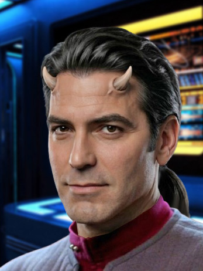

FOTONote
Diavolo, originario della Terra di Sotto - Inferno - Sol III (razza riconosciuta dalla Federazione grazie alla promozione del Cadetto Alighieri, il quale ha dimostrato che i Diavoli possono convivere all'interno della Federazione. Il riconoscimento proviene dall'Ammiraglio Vulcaniano che stipulò il patto quattro anni or sono con "Sua Eccellenza" in persona. Sono tuttora in corso gli scambi ufficiali con i rispettivi Ambasciatori, ma il più è fatto).
Data la somiglianza con il padre (da cui ha preso il naso adunco) e con la madre (dalla quale ha ereditato il carattere forte, risoluto, infingardo...), Beppe ha un NOTEVOLE aspetto fisico: alto, carnagione scura, capelli neri portati lunghi. Tutti riconoscono e soccombono al suo sguardo diabolico.
Ultimo di 14 fratelli, che non hanno per il momento intenzione di lasciare la piantagione dove sono cresciuti, ha accettato il patto fra Sua Eccellenza e l'Ammiraglio per poter avere anche lui (dato il sangue misto) gli attributi infernali (leggi CORNA).
Ora che è in possesso di un diploma e di un bel paio di cornetti (che cresceranno, anche se ora sono nascosti dai capelli!), ha volontariamente scelto la carriera all'interno della Flotta Stellare, dopo aver scoperto nei quattro anni di Accademia di avere una grande sete di avventure e di conoscenza; non solo, ma anche di trovarsi bene tra razze di diverso aspetto e ideali.
In particolare, Beppe ha stretto amicizia con la Horta Frruuu, con la quale ha diviso la stanza, i test dell'Accademia e il suo riso fritto. Senza dimenticare il cadetto vulca-messicano Alonzo Gomez Stock, la sua Ragazza Marina Scamoggia, il suo compagno al Wilde Village, Robert 'Bob' F. De Niro, Rosa Marmo, Gianna Beltempo, Patrick De Gagliardet (che ora vende scarpe in centro). Ma il posto d'onore nella vita di Beppe è preso, senza ombra di dubbio, dal suo gatto Geppo: uno stregatto infernale che lo segue ovunque adagiato sulla sua spalla sinistra, il più delle volte invisibile (si vede solo il suo sogghigno). A lui è stata dedicata la poesia che i cadetti hanno dedicato all'amore della loro vita.
Beppe è elegante, riservato, micidiale quando serve.
Non sopporta gli Andoriani (perché cornuti) e nemmeno De Leone. Il perché l'Ammiraglio sia ancora vivo è tuttora un mistero. Il perché tutto il chinotto dell'Accademia sia sparito nel giro di poche settimane, un po' meno!
Non gli piace rimettere in ordine la stanza.
Non sa giocare a scacchi.
Abilità
- SADiCo - Superiore Abilità Dialettica e Coercitiva: fin dalla sua nascita, Beppe è sempre riuscito a convincere chiunque di qualunque cosa volesse. Questo finché non ha diviso la stanza con una Horta, e non ha sostenuto un esame con Vinsar. Ma è bene considerare la difficoltà dell'impresa.
- GIOCARE SPORCO: in questo è imbattibile. Quando gli si fa presente la difficoltà per un Ufficiale della Flotta di mostrare sempre lealtà ed onore, lui perende come esempio James T. Kirk (e zittisce tutti).
- Scrivere poesie: il sangue non è acqua.
- Teletrasportarsi da un luogo all'altro istantaneamente. L'unico problema è che ci riesce con l'accompagnamento...
No!, non zolfo. Aglio.
E deve conoscere, almeno approssivamente, il luogo dove si teletrasporta. - Guidare qualsiasi mezzo meccanico.
- È telecinetico (in fase di studio: Beppe non ha ancora raggiunto la piena maturità).
- È imbattibile nel gioco del poker (perché bara); niente male nello scopone e tressette; il gioco del lotto è il suo must.
- Riesce ad interpretare il linguaggio di "quasi" tutti gli animali...
Hobby
Adora leggere e scrivere poesie.
Segue la holonovela 'Anche gli ologrammi piangono', fin dal primo episodio.
Incarichi
- CO - USS Afrodite NCC-1863